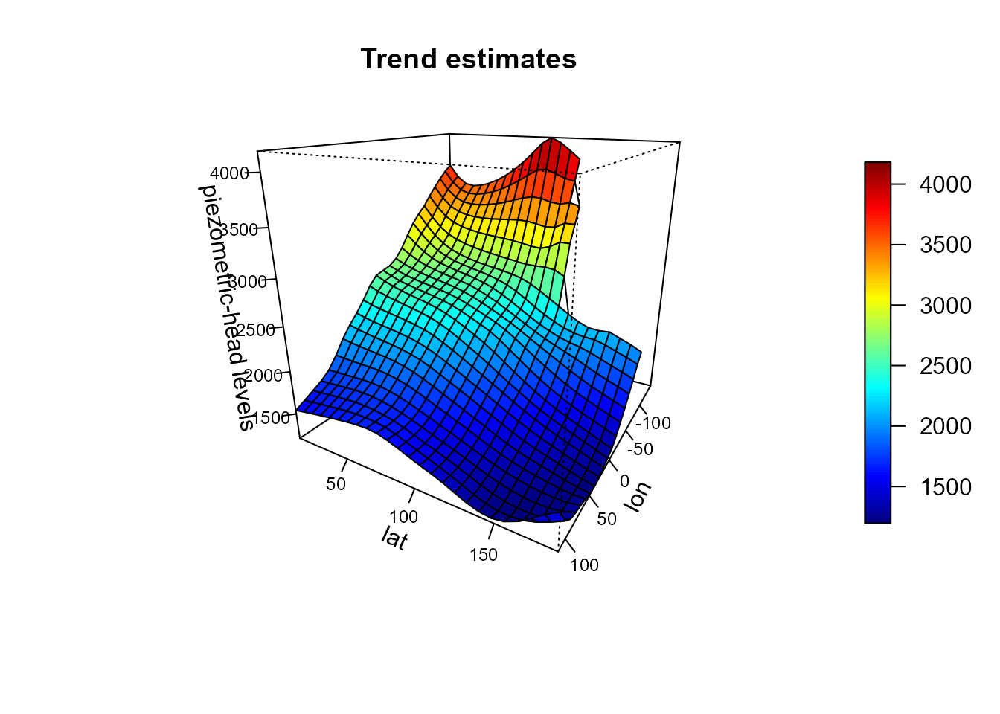
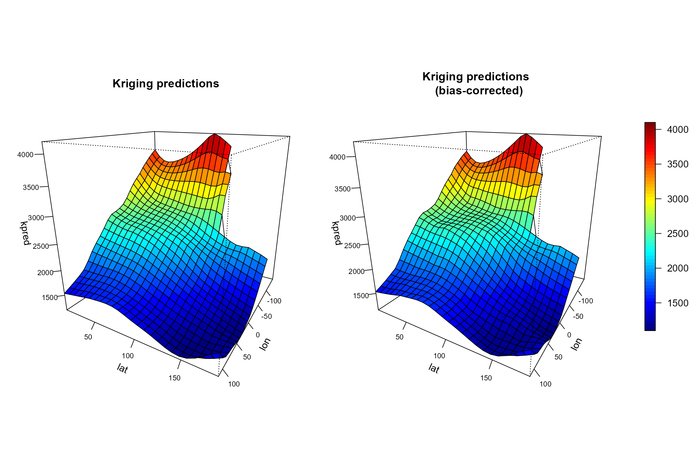
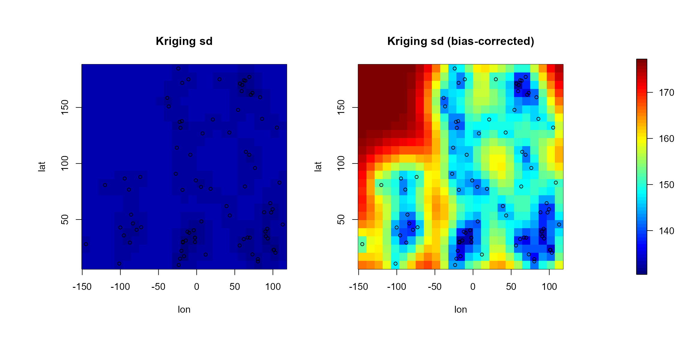

Kriging with gstat
You can use the krige (or krige.cv) utilities in gstat package together with as.vgm for (global or local) kriging…
Wolfcamp aquifer data:
library(npsp)## Package npsp: Nonparametric Spatial Statistics,
## version 0.7-1 (built on 2018-02-11).
## Copyright (C) R. Fernandez-Casal 2012-2018.
## Type `help(npsp)` for an overview of the package and
## `demo(package = "npsp")` for the list of available demos.# ?aquifer; str(aquifer); summary(aquifer)
# Scatter plot with a color scale
with(aquifer, spoints(lon, lat, head, main = "Wolfcamp aquifer data"))
Kriging
Trend estimation
lp <- locpol(aquifer[,1:2], aquifer$head, h = diag(75, 2),
hat.bin = TRUE)
# np.svariso.corr: 'lp' must have a '$locpol$hat' component
# Mask grid nodes far from data
mask <- log(np.den(lp, h = diag(c(55,55)), degree = 0)$est) > -15
lp <- mask(lp, mask = mask)
spersp(lp, main = 'Trend estimates',
zlab = 'piezometric-head levels', theta = 120) 
cpu.time(total = FALSE)## Time of last operation:
## user system elapsed
## 1.340 0.236 1.711Variogram estimation
lp.resid <- residuals(lp)
esvar <- np.svariso(aquifer[,1:2], lp.resid, maxlag = 150, nlags = 60, h = 60)
svm <- fitsvar.sb.iso(esvar) # dk = 2
esvar2 <- np.svariso.corr(lp, maxlag = 150, nlags = 60, h = 60)
svm2 <- fitsvar.sb.iso(esvar2, dk = 0) # dk = Inf
plot(svm2, main = "Nonparametric bias-corrected semivariogram and fitted models",
lwd = 2)
with(svm$fit, lines(u, fitted.sv, lty = 2))
cpu.time(total = FALSE)## Time of last operation:
## user system elapsed
## 0.576 0.008 0.637Residual Kriging
library(sp)
library(gstat)
spdf <- SpatialPointsDataFrame(aquifer[,1:2],
data.frame(y = aquifer$head, r = lp.resid))
newdata <- SpatialPoints(coords(lp))
krig <- krige(r ~ 1, locations = spdf, newdata = newdata,
model = as.vgm(svm))## [using ordinary kriging]krig.grid <- data.grid(kpred = lp$est + krig@data$var1.pred,
ksd = sqrt(krig@data$var1.var),
grid = lp$grid)
krig2 <- krige(r ~ 1, locations = spdf, newdata = newdata,
model = as.vgm(svm2))## [using ordinary kriging]krig2.grid <- data.grid(kpred = lp$est + krig2@data$var1.pred,
ksd = sqrt(krig2@data$var1.var),
grid = lp$grid)
scale.color <- jet.colors(64)
scale.range <- c(1100, 4100)
# 1x2 plot with some room for the legend...
old.par <- par(mfrow = c(1,2), omd = c(0.01, 0.9, 0.05, 0.95),
plt= c(0.08, 0.94, 0.1, 0.8))
spersp(krig.grid, main = 'Kriging predictions',
col = scale.color, legend = FALSE, theta = 120)
spersp(krig2.grid, main = 'Kriging predictions \n (bias-corrected)',
col = scale.color, legend = FALSE, theta = 120)
par(old.par)
splot(slim = scale.range, col = scale.color, legend.shrink = 0.6, add = TRUE)
old.par <- par(mfrow = c(1,2), omd = c(0.05, 0.85, 0.05, 0.95))
scale.range <- c(125, 200)
scale.range <- range(krig.grid$ksd, krig2.grid$ksd, finite = TRUE)
image( krig.grid, 'ksd', zlim = scale.range,
main = 'Kriging sd', col = scale.color)
with(aquifer, points(lon, lat, cex = 0.75))
image( krig2.grid, 'ksd', zlim = scale.range,
main = 'Kriging sd (bias-corrected)', col = scale.color)
with(aquifer, points(lon, lat, cex = 0.75))
par(old.par)
splot(slim = scale.range, col = scale.color, add = TRUE)
cpu.time()## Time of last operation:
## user system elapsed
## 0.948 0.140 1.199
## Total time:
## user system elapsed
## 2.864 0.384 3.547